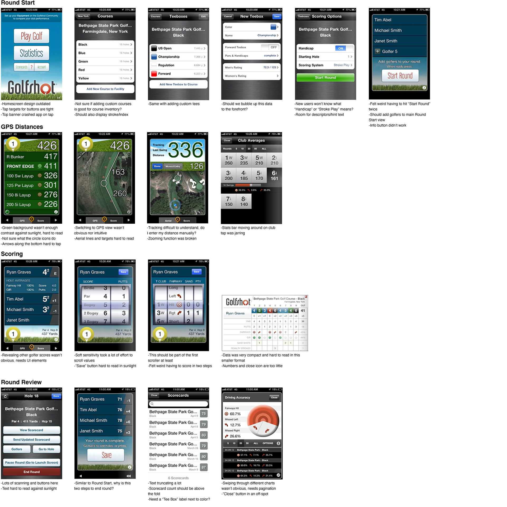
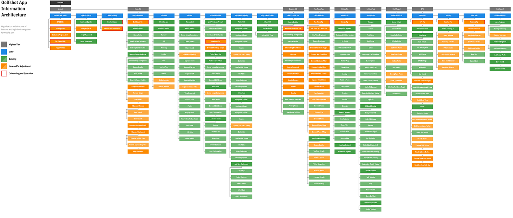
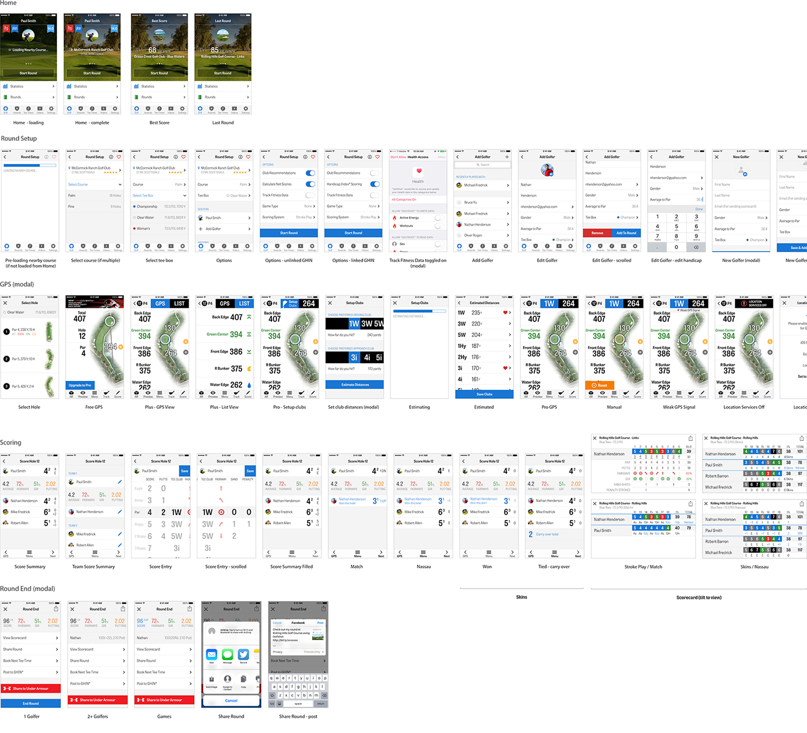
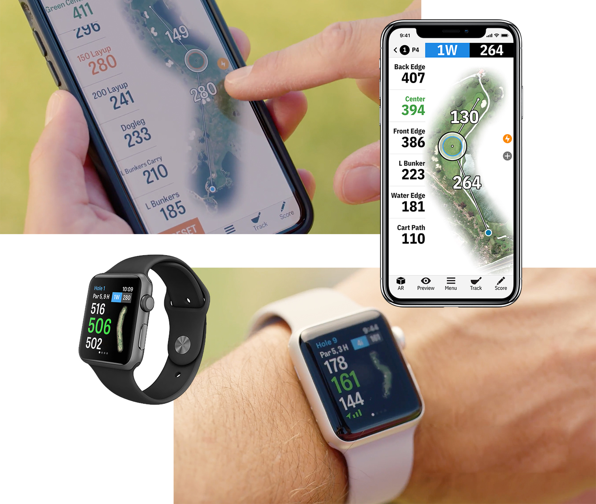
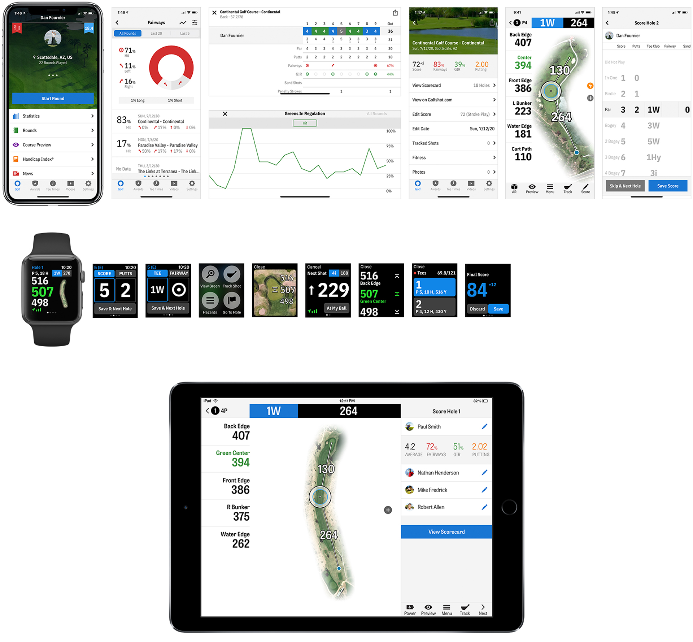
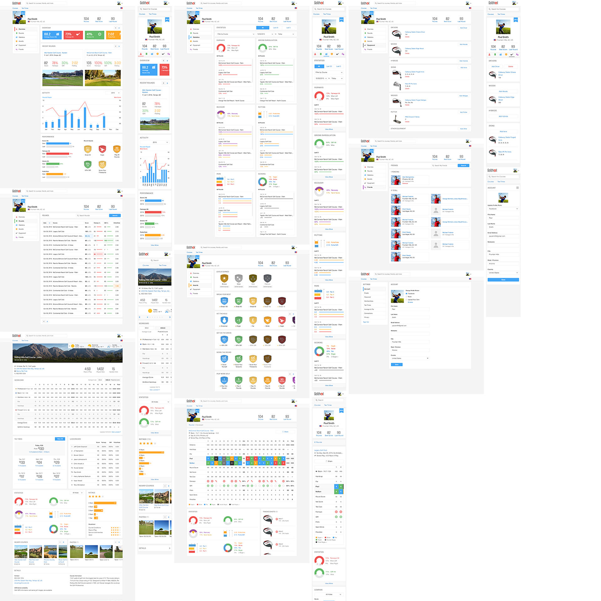
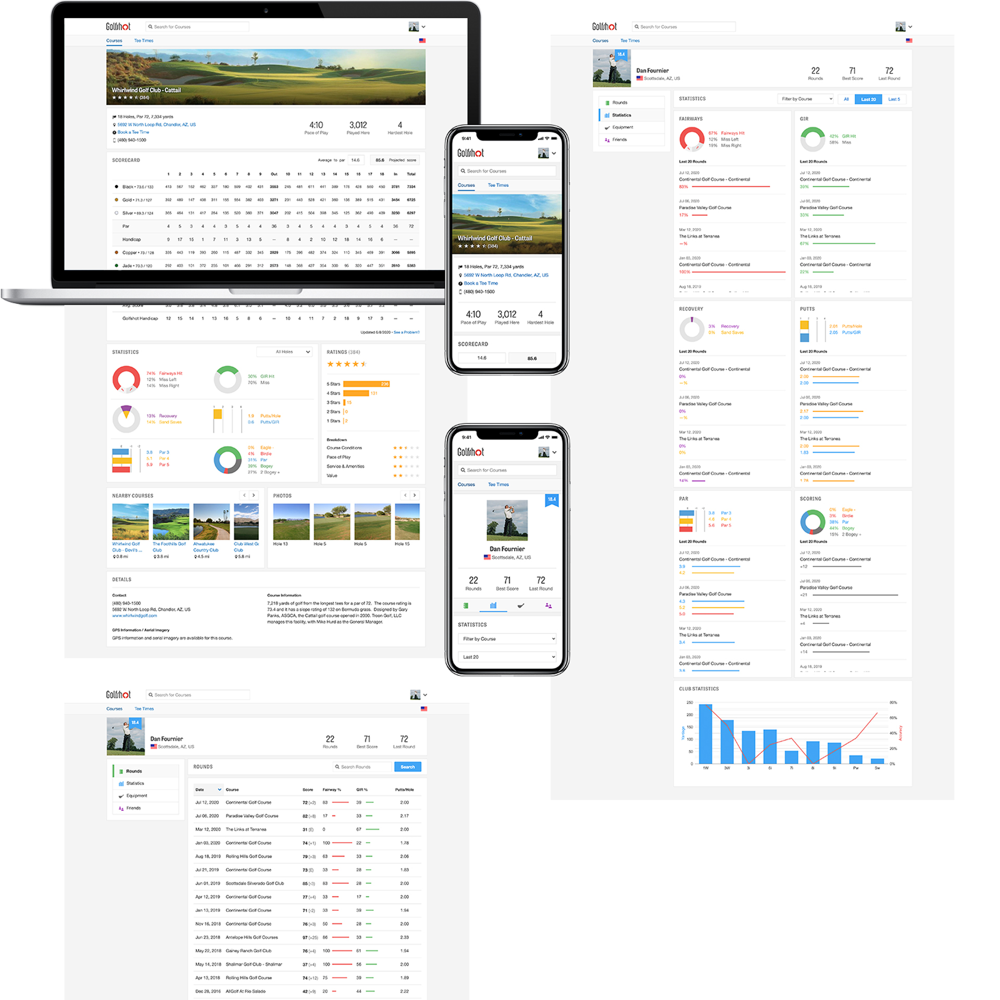
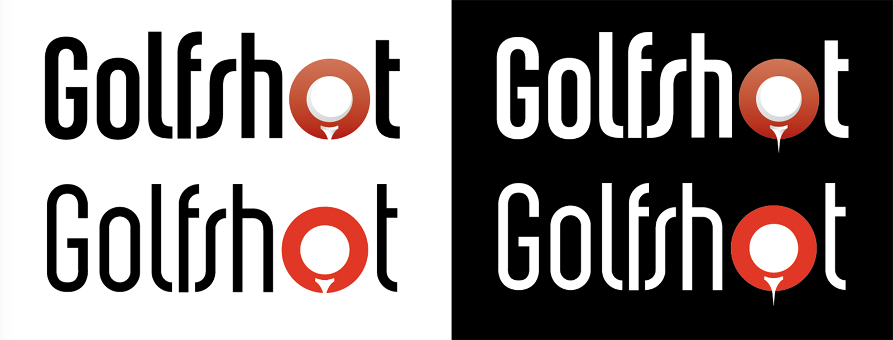
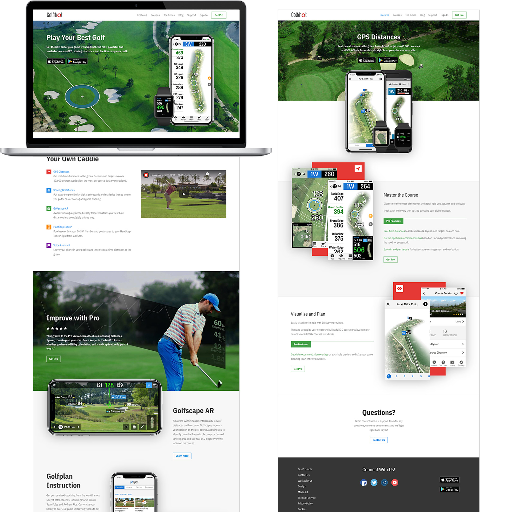
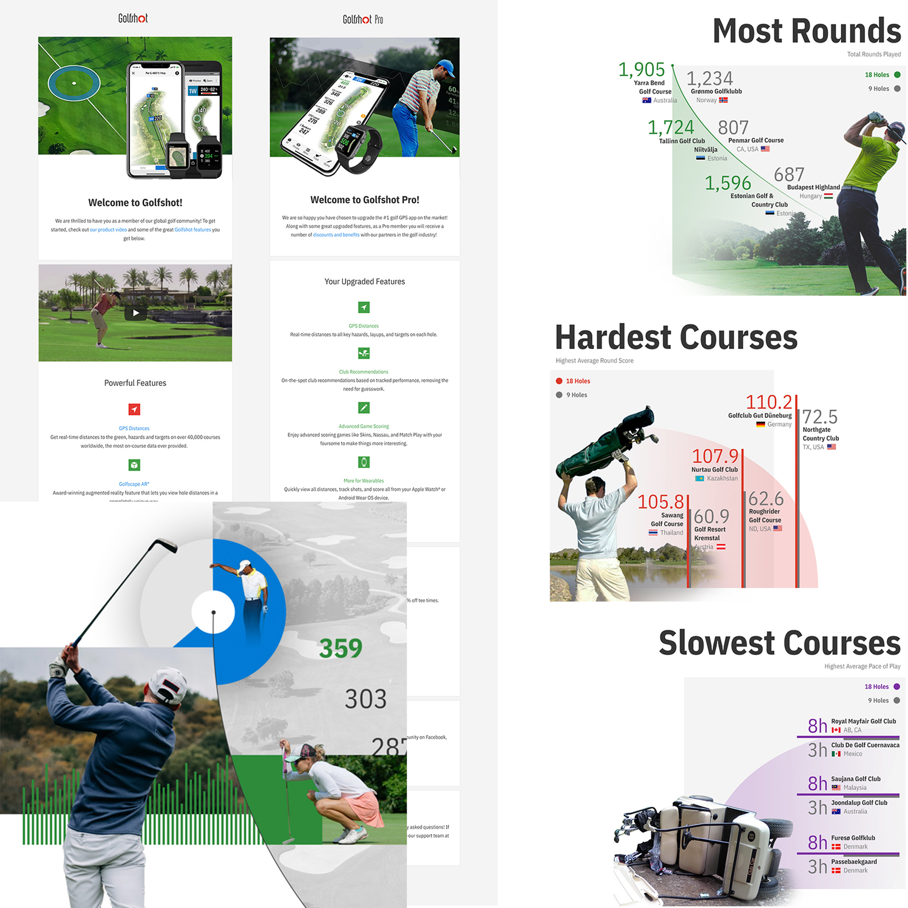

Background
Shotzoom Software originally hired me as their sole UX Designer in 2013, but I slowly grew into a Design Manager, UX Researcher, Developer, and "Brand and Graphics Guy" for our flagship product, Golfshot. We were growing steadily as a competitor in the golf/tech app space and the company was looking to expand. However, my first years were full of changes and pivots. Amidst of an acquisition, Golfshot was shelved for its sister app, PGA TOURCaddie, which was then sunsetted in 2014. At this stage, I took on a managerial role and with my design and development teams, we picked up where we left off with Golfshot: in need of a full-scale redesign and relaunch.
Opportunity
Golf was in an avant-garde movement around this time. Players young and old were adopting new, progressive ways of improving their on and off-course experiences, and mobile apps had huge potential in this sector. Golfshot was released in 2009 as one of the first apps of its kind, offering golfers a real-time GPS and scoring solution, replacing analog pencil scoring and hard-to-find course yardage markers. It saw great success and following, but was stalled by the emergence of TOURCaddie. Now with a new direction in 2014, we had a clean slate initiative to revamp and promote a very promising product.
Hypothesis
User: We believe better on and off-course experiences for golfers can be achieved by providing real-time GPS distances, automated scoring, tee time booking, course management and statistics tools that encourage and improve play.
Business: We believe higher adoption and subscription rates with Golfshot will occur by continuing to grow and position it as the #1 golf app in the mobile and golf space.
Timeline
5 Years, March 2014 - April 2019
Mobile and Wearable App Design
{kind=link}
Product Vision and Business Plan
Business Data and Guiding Principles
All leadership, design, development, support, and marketing teams met to discuss the future of Golfshot and form a business plan. We started by examining the existing Golfshot products and its current position in the market. We also compiled statistics and research, which paved way for us to put together some high level principles:
- Vision: Be an essential part of every user's improvement and enjoyment of the game of golf
- Mission: Be recognized as the market leader in mobile golf apps and data services that improve every user's game
- Values: Pioneer with innovation, partner with industry leaders, and be pervasive with accessibility
Roadmap
We then pooled all of these resources together into once central, running doc to share and onboard. With consensus, we started coming up with initial action items on how to improve the mobile apps:
- Short term: Bring iOS up to parity with Android feature set and addressing UX and bugs along the way
- Long term: Implement a design system for iterative development on a full scale redesign and relaunch of the products
Our Hypothesis
With our resurgency plan established, we put together two hypothesis statements:
User: We believe better on and off-course experiences for golfers can be achieved by providing real-time GPS distances, automated scoring, tee time booking, course management and statistics tools that encourage and improve play.
Business: We believe higher adoption and subscription rates with Golfshot will occur by continuing to grow and position it as the #1 golf app in the mobile and golf space.
Audit and Testing
Product Auditing
Our business plan and roadmap led us to reevaluate and audit our current Golfshot iOS app. It was in dire need of a refresh both in design/UX and engineering, having utilized old skeuomorphic design patterns and outdated Objective C code. Being in maintanence mode for over 2 years took its toll as updated iOS versions and new styles of design passed it by. To start, we noted some aspects after reviewing past user guides, product testing, and conducting visual audits:
- There was a lack of feature parity between Golfshot and its competitors
- Some crucial design elements weren't obvious to interact with/touch
- A dark theme UI was put in place to help with sun brightness and battery life on course
- A large amount of golfers used the GPS features but rarely kept score
- The apps followed older interaction standards of iOS/mobile, having users go through many stacks of views to edit information
Field Testing and Q&A
We then put together a few focus groups with legacy app users and conducted field testing and Q&A at local courses. Using a Garmin GPS watch as a control, their feedback on Golfshot aligned with some of our initial points from audit, but also uncovered crucial things we would've missed:
- Distance accuracy was good but very slow to update when on the move
- About half the time, the aerial image of the course wouldn't download correctly, glitch out, or load indeterminately
- Setting up the round and scoring holes took "forever"
- Sun brightness against the UI and smaller type was hard to read
- Displaying club recommendations would really help with distances
- Auto-advancing to the next hole would be a better hands-free experience
{kind=link}

First visual audit of Golfshot app by section/flow, noting suggestions, features and functionality.
{kind=link}
Empathize
Understand the User
After continually reviewing user feedback and Q&A information, I pieced together a series of empathy maps of golfers on-course. This was crucial for us to understand who exactly we're solving for by walking a mile in their shoes (literally, on courses).
Forming Our Persona
With gathering feedback from further field testing, Q&A, reviews, and app tracking metrics, we were able to update and paint a full picture of our target persona:
Demographic
- Older (35-65 years old)
- 84% male, 16% female
- Social/casual golfers (1-4 times per month)
- Like-amateurs/competitors (5+ per month and tournament play)
Needs
- A GPS that displays distances
- Solves issue of not knowing how far distances are by eye/intuition
- Automates manual tasks to save time and uninterrupt playing
Behaviors
- Looking to improve some aspects of their game
- Constantly surveying for ideal distance/target
- Think 2 shots ahead
- Score to advance to the next hole
Define
Existing Problems and Needs
With continuous user feedback and field testing leading the way, we began to extract negative feedback and also draw themes from them to isolate common problems. Findings:
- Need Easier Setup: We noticed that setting up a golfer's round took a long time. They'd have to navigate and edit through 6+ different views before getting to the "Start" screen. When golfers are packing up and ready to head out to the course, they need this process to be seamless and undistracting.
- Poor GPS Accuracy and Speed: The app constantly and randomly would display off-distances and be slow to update. If golfers moved quickly, like in a cart, the target wouldn't triangulate fast enough and bounce all over the place. Ideally, Golfshot should be as efficient as conventional rangefinders, like Garmin and laser pointers.
- Poor Battery Life: This was a bi-product of technology at the time. The iPhone 4 and later released 5 didn't have adequate battery life to support a constantly running GPS, and golfer's phones would die as early as mid round.
- More Features: Club recommendations, advanced statistics, auto-advancing holes, and tee time booking were frequent asks.
- Hard to Use in Sunlight: Since Golfshot was originally a dark themed app, it did save on battery by emmiting less light but the tradeoff was being difficult to read in bright sunlight, a common occurance on golf courses. Switching to a lighter theme would increase readability and reduce reflections.
- Hard to Navigate GPS and Scoring: The main GPS view was compact and had UI elements that weren't clear if they were actionable. Golfer's would ask how to switch between the aerial and distance list view often. Also the scoring scroller took up two views and wasn't sensitive enough. Golfers would spend minutes fiddling around trying to score before their next hole.

{kind=link}
Ideate
Converging and Design Sprints
After identifying issues, we used design sprinting, "how-might-wes", competitive analysis, story boarding, and user feedback to generate ideas. This process was huge for us in determining tandible solutions that are user-centric, data-driven, and supported our business outcome/vision. Riding off of this, we formed our strategy.
Execute Strategy and Solutions
Phase 1: On-course UX
- Revisit GPS: GPS is the core of the app. It needed more familiar UI elements that revealed interactivity, a redesign for better at-glance data, and simplification based on what golfers actually cared for via feedback and data. We also wanted to introduce our new hole-by-hole 3D flyover preview feature so golfers get a panned view of their hole before teeing off.
- Simplify Round Setup: We had to reduce the amount of views and steps for setting up rounds because we observed golfers taking a very long time figuring out what to edit and add while noticing massive dropoff. Merging these steps into one "Google Form"/question-like view tested positively and cut setup times by more than half.
- Update Scoring: Very little golfers scored in the legacy app because it was not obvious to access and slow/manual to scroll the picker for values. By merging its current 2-screen step, making values larger, and automating scores based on past play, we'd hope to improve this UX for more adoption.
- Auto-advancing Holes: A big feature request was having the app navigate to the next hole automatically based on the golfer's position. This would give golfers a hands-free experience and reduce steps needed to start their next hole.
- Round End Review and Sharing: Golfers rarely shared their round because it wasn't obvious to do so and didn't show their scores or progress. In conjunction with scoring, we wanted this to be an added step after saving their round so golfers felt encouraged share it.
Phase 2: Off-course UX
- Past Rounds and Statistics: Golfers loved tracking their progress and looking at past scorecards for comparison. We wanted to revisit our Rounds and Statistics and surface vital and informative round data earlier while making interactions between data sets more obvious.
- Implement Tee Time Booking: With the backing of GolfNow's online inventory, we started thinking up flows for golfers to book tee times right from Golfshot. This was a great alignment of new business opportunity and user asks and outcomes.
- Course Previews and Management: Along with Rounds and Statistics, golfers also wanted to preview and learn about courses before playing them. We wanted to carve out a section of the app where users can review data pulled from our own course directory and view 3D flyover course previews.

Using information architecture to showcase app hierarchy and noting legacy features to be replaced with new, tested ones
Prototyping and Design System
Information Architecture, Sketching and Wireframes
To get a top-down view of our new app's navigation and heirarchy, we used information architecture to list out the legacy features being replaced by our new ideas. This was a crucial first step towards prototyping, as we spent quite some time ironing out how various elements will be accessed within the app.
Focusing on the on-course UX first, our solutions were dumped into hundreds of paper sketches, whiteboarding sessions, and user story maps and iterated on constantly. After several stakeholder and user walk-throughs, and in parallel with approaching the off-course UX, we took our strongest candidates and designed them into wireframes.
Form Design System
With stakeholder approval, I then started building our design system. Instead of thinking about designs as just large templates, we wanted to use this system to break down designs into their most basic elements and use them to assemble views in various, but visually consistent ways. As I went a long, I documented elements and why/where to use them:
- Principles and purpose: Why we are doing this and how it helps teams and users
- Design language: Typography, colors, spacing and imagery standards
- Components: Navigation bars, table cells, segment bars, etc.
Prototypes
Using Photoshop initially, then translating to Adobe XD and shared libraries with these new design system components, we started designing views and flows in high fidelity and sharing them with users and stakeholders for review and iterations.
View Mobile Prototype Example{kind=link}

Version 1 of iOS primary flows.
{kind=link}
Apple Watch and Wearables
Discovery and Objectives
In Spring 2015, a coworker and I were invited to Apple's HQ in Cupertino, CA. They were bringing a handful of teams together to demo their new top-secret product: the Apple Watch. This was a thrilling opportunity for us because it fit our persona and use case perfectly. Golfers used expensive 3rd party watches all the time to quickly glance at distances, and having Golfshot run on an alternative would immediately make us a competitor in that hardware space.
During our time there, we worked with prototypes of the Watch hands on, drew up some high level concepts and flows, and learned from evangelists. We walked away with a few Watches to test, objectives, and action items:
- Gain technical understanding of watchOS 1
- Design sprint to identify potential problems and pave way for prototyping
- Develop an alpha for internal use, leading to MVP/betas for user testing
- Learn, iterate, and release with the Watch
Design, Development, and Testing
After technical understanding and leading a design sprint, we set to work prototyping and developing our alpha with what we learned:
- Connectivity: One potential use case is golfers leaving their iPhone in their cart. Since Watch is tethered to your iPhone for all data, including GPS distances, we'll need to make it very clear to keep your iPhone with you for best accuracy
- Design/UX: Apple had initial Watch best practices that were very conservative, so our app had to follow rigid design standards for interactivity
- Small Form Factor: Since our persona was generally older (35-65), accessibility with this new smaller screen must be stressed. Larger type, bright buttons, and simple interactions were priority.
After several design reviews, we built our alpha for internal field testing. Our findings aligned with our learnings and confirmed use cases, making iterations easier towards a beta.
Betas, Feedback Loops, and Iteration
Beta Releases and Feedback
With mobile and wearable apps developing in parallel, we built and distributed betas for field testing with stakeholders, users, and interested parties from Apple and Google. Across multiple courses, use cases, and timezones, results and themes began to funnel in:
- Scoring felt much more intuitive and fast, especially for multiple golfers
- Watch GPS was unreliable at times and would freeze often, especially when it was further away from its iPhone
- Having GPS distances diplayed next to aerial imagery on mobile saved time from having to go back and forth between views like in legacy
- Tracking shots had a steep learning curve but made sense after a while
- The light theme UI was much easier to read in bright sunlight
- Watch experience would be better if it didn't have to be paired with iPhone
- Sharing statistics and scorecards after rounds was more obvious and adopted
Rolling NPS and Satisfaction Scores
After several rounds of testing, we'd setup rolling NPS metrics and kept a close eye on satisfaction scores for our various outcomes. We noticed the UX improved and retention/adoption rates increased as our NPS went from 37.1 in 2014 to 51.5 in 2016.
Improving
Each beta release led to a slew of design adjustments, bug fixes, and thorough testing, but over time, the amount of tweaking decreased. Once our final beta was shipped and feedback loop addressed, we prepared the app for a full scale launch on App Store, Watch Store, and Google Play.
{kind=link}
The Designs
Golfshot was relaunched Summer of 2016 for iOS/Android in 12 different languages across the globe. It received high adoption, ratings, satisfaction, and praise. One of my favorite reviews was it "taught an old dog new tricks." Our userbase grew from 1.7 million to 4.6 million in 2 years while getting featured and awarded prominently in both app stores.
We continued to address feedback going into the high golf season and made some important adjustments during off season. Prior to my departure from the company in 2019, I put together a lean product brief for handoff.
View Site
View on App Store
View on Google Play


Course Directory and User Profile Site Design
{kind=link}
Strategy and Audit
Discovery
In 2013 while working in parallel with the mobile team on Golfshot, I was also tasked with coming up with new designs for our web-based products. At that time, Shotzoom had two sites for user profile management and a golf course directory: golfshot.com and shotzoom.com. The former was the first legacy site that held all Golfshot user's scorecards, statistics, equipment, and profile settings. Shotzoom.com however was a fairly recent initiative to merge all the original Shotzoom family of apps and data into one central user portal, including Golfshot.
However after an acquisition, the shotzoom.com project was stalled and we decided to turn our focus onto legacy golfshot.com for improvement.
Site Auditing
I dug into golfshot.com to perform a visual and feature audit. The site was very outdated design-wise and pages took a long time to load, if they did at all. Shotzoom.com was more up-to-speed but was not nearly as robust as golfshot.com was in terms of user data and profile management. I then composed a simple site map of each to keep track of information architecture and nested views/features.
Long-Term Strategy
Working with our CTO and Project Manager, we came up with some strategies on how to balance our web-side products with mobile-side. Since the Golfshot mobile app was a tool for users to gather their on-course data, held a robust set of features, and was our flagship product, we hypothesized that web would just be used for viewing user data, course info, and basic profile management.
Feedback and Market Research
User Reviews and Feedback
We sent off a few rounds of user surveys to gather feedback on likes, dislikes, and feature asks with legacy golfshot.com. Findings:
- Viewing statistics and past rounds were highly favorable
- Golfers wanted more advanced statistics and robust course information/scorecards
- Features like adding friends and managing equipment were not as popular as we thought
- Using social media platforms like Facebook to share rounds instead of within golfshot.com
- Handicap tracking, a better course directory, and leaderboards were the most requested new features
Market and Design Research
In conjunction with gathering feedback, I created accounts with other online golf competitors to research and experience their own user portals. We learned that the PGA, GolfLogix, Swing by Swing, Hole19, and The Grint all displayed user statistics and course information primarily, while backgrounding social-media-esk features like friending, reviews, and commenting.
This wasn't too surprising for us as feedback aligned with this notion of statistics and course-related emphasis. We determined that golfers 1.) love comparing their statistics and past rounds and 2.) viewed course information and reviews frequently before playing them, especially if they're new to it.
{kind=link}
{kind=link}
Empathize
Understand the User
With feedback as my guide, I pieced together a series of empathy maps of golfers off-course. Since the Golfshot app was used as a tool on-course, golfshot.com had a similar, but varying use case and behavior.
Forming Our Persona
Gathering feedback from reviews and site metrics, and in parallel with examining mobile app usage, we put together our target persona for web:
Demographic
- Older (35-65 years old)
- 84% male, 16% female
- Social/casual golfers (1-4 times per month)
- Like-amateurs/competitors (5+ per month and tournament play)
Needs
- Robust statistics, round history, and course directory
- Tools for easy comparison and external sharing
- Handicap tracking and ranking for competitive play
Behaviors
- Looking to improve some aspects of their game
- Sharing scorecards and bragging with friends
- Browse pro golfer leaderboards and statistics online
Define
Existing Problems and Needs
Using our market research, mapping sessions, and feedback, we started drawing themes to highlight core issues with the site. Findings:
- Poor Course Directory: A lot of our courses were outdated and presented stale information. Golfers would refer to the PGA and even local course sites as being more robust with course scorecard information, reviews, player rankings, and statistics.
- Lack of Statistics: We displayed users's basic high-level statistics, like fairways hit, greens in regulation, scrambling, and scoring averages, but even the mobile app displayed more. Comparitive analysis, historic charts/line graphs, and head-to-head viewing with playing partners were all brought up to include.
- Buggy: Golfshot.com was very outdated and needed a major refactor. Long loading times for power users, white-screening, and 500 errors with the server occurred often.
- Older Design and Clunky UX: Like its code, the site was in dire need of a facelift and rethink, especially when we were looking to update the mobile apps. Competitors like Hole19 and The Grint were already light years ahead of us design and functionality-wise. Golfers would find searching for old scorecards, updating account info, and sharing data particularly difficult.
{kind=link}
{kind=link}
Ideate
Converging and Brainstorm
As we dissected themes, it became more apparent that the course directory, statistics, and profile management sections of golfshot.com would be our focus. After settling in, the web team and I held brainstorming sessions, idea dumps, and design sprints to uncover ideas.
Solutions and Focus
With a few rounds of these sessions under our belt, I drafted documentation highlighting our proposed solutions for an MVP and looped in stakeholders:
- Course Directory: Redesign our courses pages to emphasize scorecards, field statistics, ratings, and leaderboards. This would help golfers get a wholistic view of potential courses they'd want to play.
- Profile and Statistics: Merge all the currently scattered user statistics and profile page under one roof for the user so they don't have to constantly search for their own data.
- Rounds: Revamp the user scorecards pages and portray it more as an end-to-end on-course experience for users. Instead of just one static scorecard, show round statistics, equipment used, and commenting boxes for bragging and trash talk.
Sketch, Prototype, and Design System
Information Architecture, Sketching, and Wireframes
We set to work composing and tweaking the new information architecture. Outlining site maps previously made this process much easier as we arrived to solutions faster. From there, I sketched UI, flows, and diagrams and translated our strongest candidates into wireframes for stakeholder review.
Form Design System
Similarly to mobile app, I built our web design system, breaking down designs into their most basic elements and using them to assemble views in various, but visually consistent ways. As I went a long, I documented elements and why/where to use them:
- Principles and purpose: Why we are doing this and how it helps teams and users
- Design language: Typography, colors, spacing and imagery standards
- Components: Navigation bars, sidebars, graphs/charts, media viewers, containers, dropdowns, fields, etc.
Prototypes
Using Photoshop at first, then translating to Adobe XD and shared libraries with these new design system components, I started designing views and flows in high fidelity and sharing them with users and stakeholders for review and iterations.
View Web Prototype Example{kind=link}

Version 4 of the designs.
{kind=link}
Staging and Review
Staging Updates and Feedback
While working closely with web team to address bugs and UI adjustments, we set up a round of user testing with our staging site, targeting each core piece of golfshot.com: course directory, statistics, rounds, and profile managment. After compiling the survey results, our findings were positive with room to improve:
- New all-in-one profile view is much easier to navigate and understand
- The Overview tab wasn't as helpful
- Statistics and history views were great but had slow loading problems generating the charts
- The round sharing functionality got high praise and allowing for social media posting was a plus
- Account and settings management was more helpful, especially with showing subscriptions
Improving
By responding to the feedback and designing/developing against them in real-time, we made significant strides in a shorter amount of time. After improving the UX, fixing bugs, optimizing the platform, and applying our new system, golfshot.com felt like a completely new and revamped site.
The Designs
We relaunched golfshot.com in early 2016 and continued to learn from feedback to iterate. Golfers enjoyed using it as a tool to view their progress, upcoming courses, and sharing info with their playing partners. Ultimately, it saw increased retention, traffic, and post-round adoption.
View Site

Brand, Marketing Site, Email, and Graphic Design
{kind=link}
Changes and Direction
Onboarding
Working closely with Golfshot's CEO and original Design Principal, I wanted to learn about his branding approach and how we can continue to evolve it. Around this time in 2013, the skeuomorphism design was prominent. Deep color hues, darker shadows, reflections, gradients, and Helvetica were prevelant, especially in the tech and app space. Golfshot was designed from the ground up using these patterns because it was just the thing to do for apps and websites at the time.
Changes on the Horizon
However, skeuomorphism had its days numbered. In line with the departure of our CEO and a new acquisition of Shotzoom, industry titans Apple and Google were setting the new standard of product design with iOS7 and Material Design. With their release and just over the course of a few months in 2014, tech companies immediately set to work changing up their brand strategy, cleaning up their logos, and redesigning their products to catch this new wave of design practice.
The result was an emergence of newly refined products for app stores, marketing materials, and web presense alike. Brighter colors, white space, new modern typography, and "flat" aesthetic were the new norm.
A New Direction and Strategy
Golfshot fell behind this industry design resurgance because it was shelved during our acquisition. However in 2015, we got the green light to revisit and relaunch its mobile app and web products. This gave me a clean slate to evaluate our current brand and set a strategy on evolving it:
- Do a conservative approach with the logo to avoid breaking our strong brand recognition
- Reevaluate our golfer statistics and data visualization styles
- Revamp our design language, like colors, font, iconography, and image standards
- Form a branding system to extend into all our digital and physical products
Define Design Language
Colors
We introduced and iterated on a new color palette that was brighter and contrasted more against lighter surfaces. My original strategy was to have two sets of the same palettes but with different tints:
- Mobile apps: Brighter colors for better accessibility and viewership on mobile (particularly on-course, in the sun, etc.)
- Web and email: Dimmed colors for user profile site, marketing site, and email campaigns
Typography
Switching to a new font took a lot of research, especially when prioritizing accessibility and viewership with our older persona. I originally went with Tablet Gothic because of its modern look but subtle creative personality with the various characters. It was legible, flexible, bold, and easy to read.
Iconography
I couldn't find a general icon family to work with since Golfshot was a niche product tailored for golfing, so I decided to design ours from scratch. Everything from on-course app usage, to marketing application, to web systems, I design, tweaked, and exported icons for. Over time, I group them based on their application for our evolving design system.
View Design System Spec{kind=link}
{kind=link}
Refine Logo and Mark
Strategy
The "Golfshot" logo and mark had very strong brand recognition, not only with golfers, but users of the app stores as well. We wanted to approach this logo conservatively and adapt it for a more modern design aesthetic and appeal.
Cleaning Up
Originally, I put together some concepts that departed from its original theme and shapes. Over time we learned that users and stakeholders had grown attached to our legacy branding but would note that it "needs cleaning up". I took this feedback into the lab and came up with new versions that fit this need.
Digitize and Refine
After sketching and prototyping, I took our strongest candidate and vectorized it. After sharing it around the office and with a handful of power users, the new logo was a hit and captured exactly what we were looking for with a fresh, modern take on an older mark.

Final logo up against the original.
Evolve Into a Brand System
Application and Guides
With an updated logo and design language, I put together a brand usage guide. We then started applying it to our suite of digital and physical products. Mobile apps, websites, emails, advertising, swag, and social media all got a facelift with our new logo, color palettes, typography, and iconography.
View Original Brand GuideEvolution Over Time
As the months past with various initiatives, the brand stayed fairly untouched. However, with our mobile apps and website revamp on the horizon in 2016, I decided to revisit our brand design language and evolve it into a system. By updating and compartmentalizing various design elements into a systematic process, we can constantly reuse them for a whole range of products, particulary for user-facing and marketing projects. I then forked this work into our design system, used for our apps and websites.
View Design System SpecNew Styles and Metaphors
Our brand was evolving, and by changing our typography, color, and imagery standards slightly, it made a big impact on our digital presense. We looked modern, fresh, and "edgy" for our golf persona and it reflected well. I came up with a series of design metaphors for our marketing outreach, like overlaying elements and rendering data in a physical space, to help us relate more with how golfers track their progress.
{kind=link}
The Designs
The Golfshot brand system took on a whole new role, as we continued to evolve and apply it with new product releases. Everything became more visually distinct, and after years of experimenting, versions, and tweaking, we finally looked like an A+ brand that golfers could relate too. Marketing sites, emails, ad campaigns, and physical goods all looked like they belonged to the same brand family.
View SiteView Brand Guide
View Design System Spec

